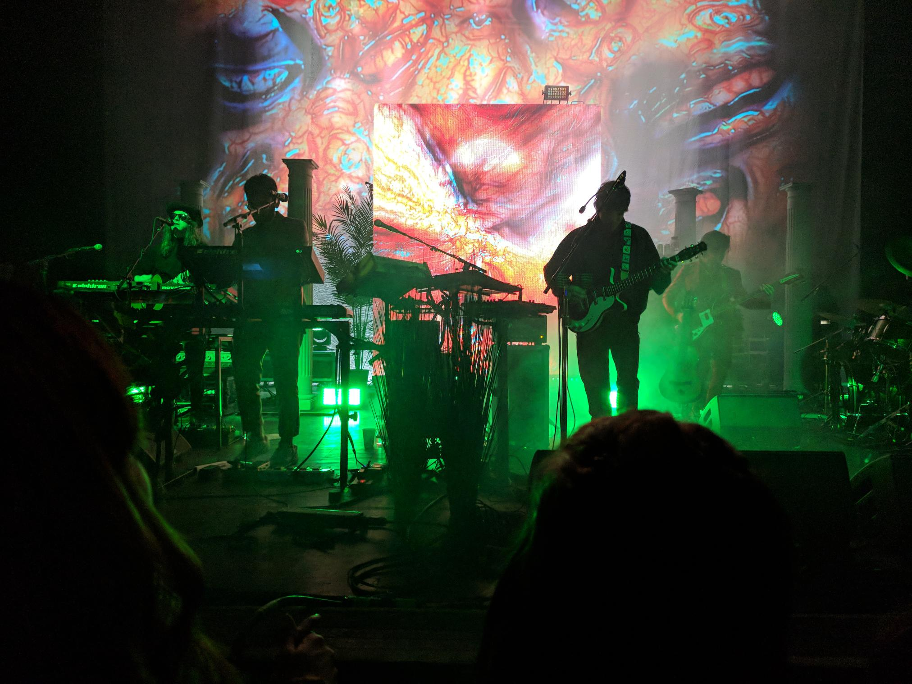

MGMT is an American pop and rock band formed in 2002 in Middletown, Connecticut. It was founded by multi-instrumentalists Andrew VanWyngarden and Ben Goldwasser. Alongside VanWyngarden and Goldwasser, MGMT's live lineup currently consists of drummer Will Berman, bassist Simon O'Connor, and guitarist and keyboard James Richardson.
